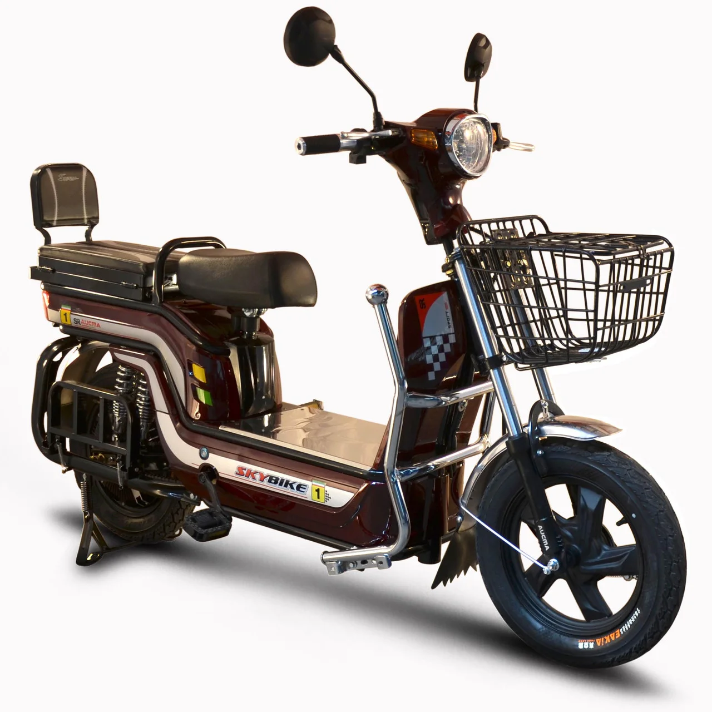

Электроскутером называется классический двухколесный скутер, который работает не на бензине, а заряжается от электрической сети. Перед тем, как отправиться в магазин за покупкой этого средства передвижения, рекомендуется ознакомиться с основными параметрами, на которые стоит обратить внимание при его выборе.
Технические характеристики
Прежде чем покупать дорогой электроскутер, нужно точно определиться с тем, для каких целей он будет использоваться. Если нужно средство передвижения для поездок в магазин и на работу, лучшим вариантом станет бюджетный электроскутер. Для езды на большие расстояния придется обратить внимание на электроскутеры более дорогих моделей. В целом, при определении стоимости данного транспортного средства, учитываются следующие параметры:
- Мощность двигателя. От этого параметра зависти производительность транспорта в пути.
- Габариты. Размер шин и всего корпуса электроскутера влияют на портативность устройства и удобство его хранения.
- Стойкость к климатическим условиям важна в условиях туристических поездок или при хранении транспортного средства под открытым небом.
- Емкость аккумулятора влияет на дальность поездок на электроскутере.
- Показатели скорости – этот параметр важен для любителей быстрой езды.
Мощность двигателя электроскутера может составлять от 250 до 500 Ватт. Отдельное внимание стоит отнести такому параметру, как вес пользователя. Не все модели электроскутеров рассчитаны для водителей с весом 120 и вышел килограмм. Сами же средства для передвижения могут весить от 14 до 9-0 килограмм.
Для максимальной износостойкости не рекомендуется хранить электроскутер под открытым небом, особенно в летний период. На устройство негативно влияют солнечные лучи. Также нужно ухаживать за колесами такого транспорта, своевременно подкачивая их и не ездя по разбитой трассе.
По материалам сайта: ( Сайт - РЕКОМЕНДУЮ ) https://giroskutery.com.ua/chto-takoe-elektroskuter